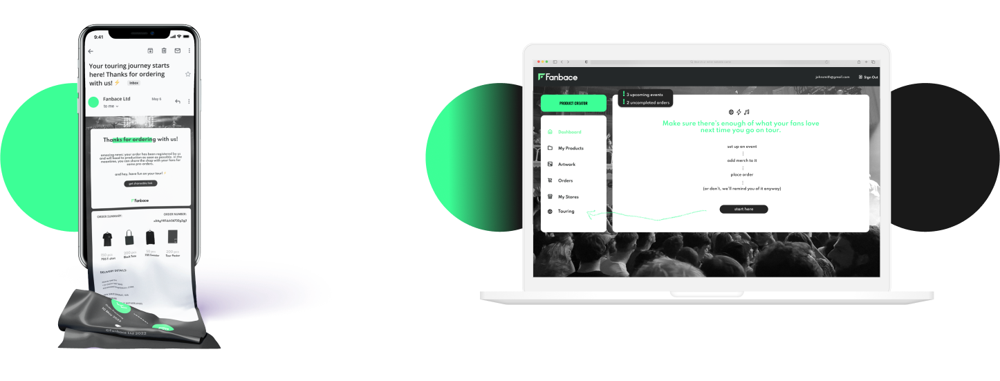
GRADUATION PROJECT FOR A MUSIC MERCHANDISE E-COMMERCE PLATFORM
FANBACE LTD DUBLIN, 2022
a 3 month project that envisioned creating a solution for musicians to place merch orders when they go on tour.
following the design thinking process, i researched, empathised, prototyped and tested the product thoroughly. the end product was under the shape of relatively hybrid wireframes, as the company was going to apply their own branding and ui design to the solution.
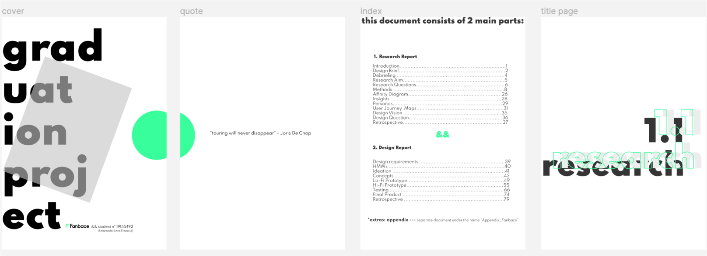
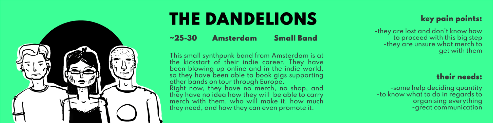
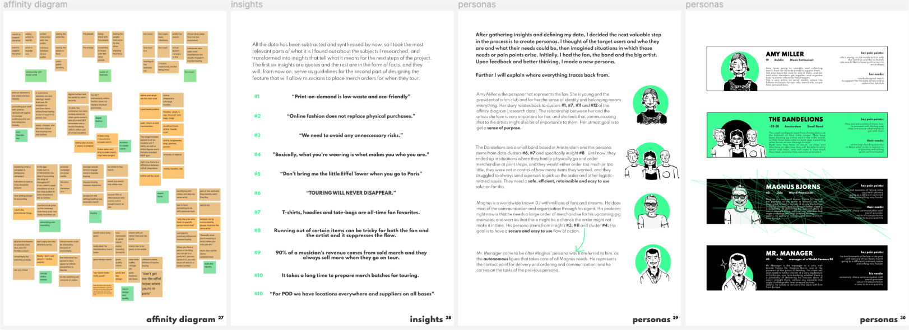
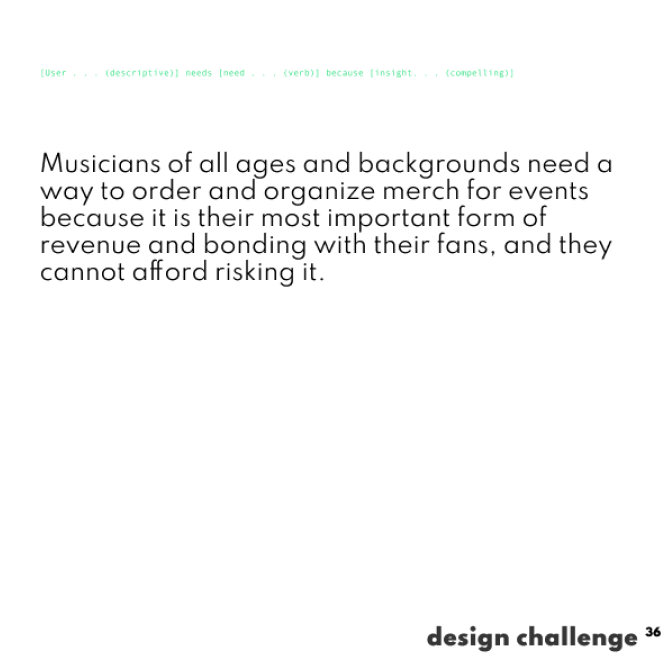
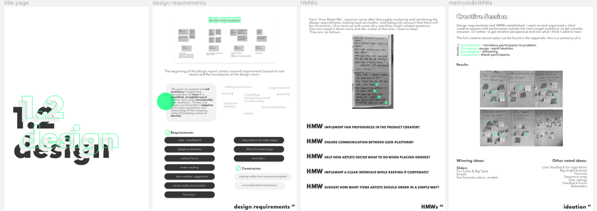
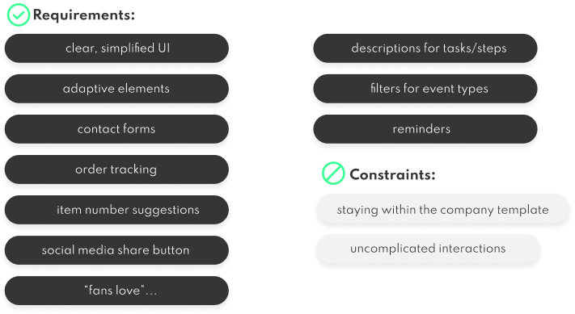
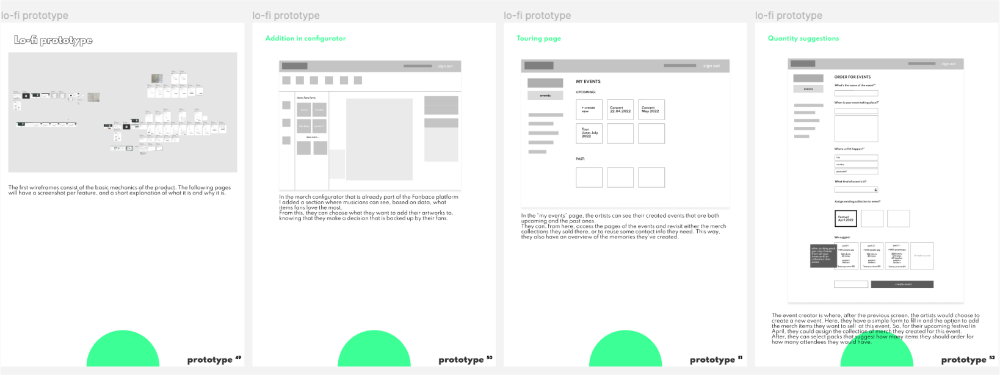
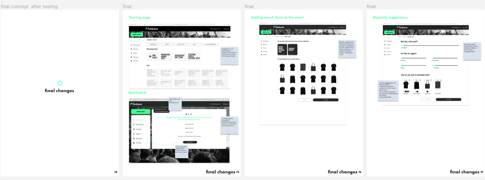
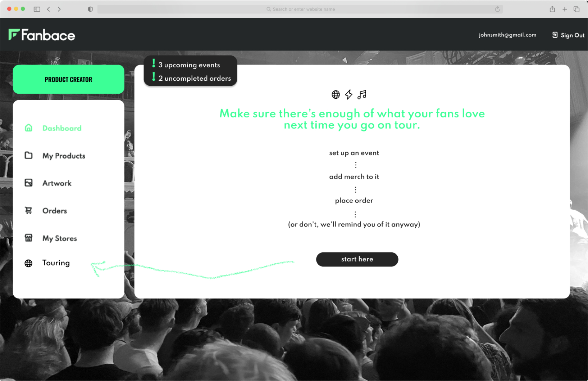
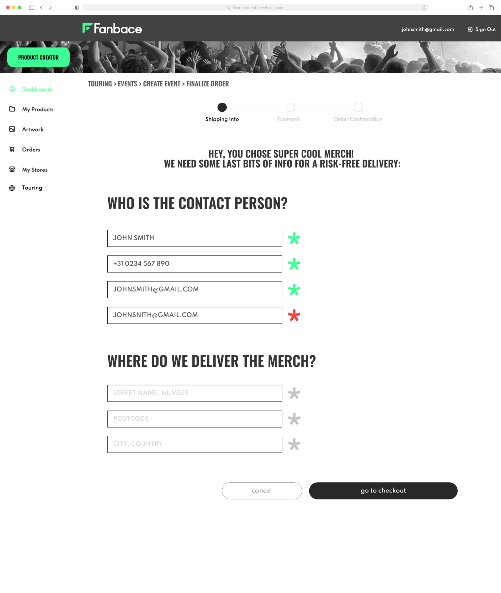
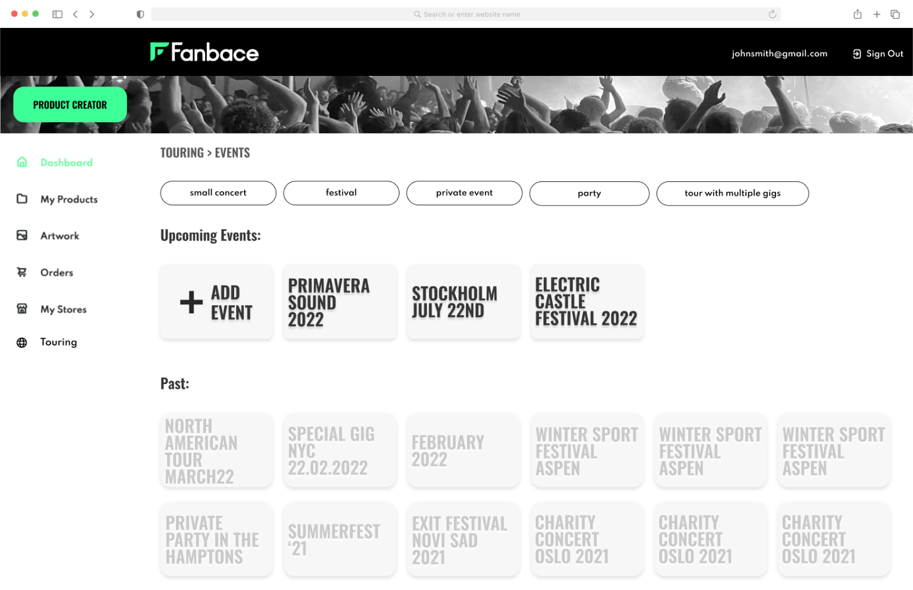
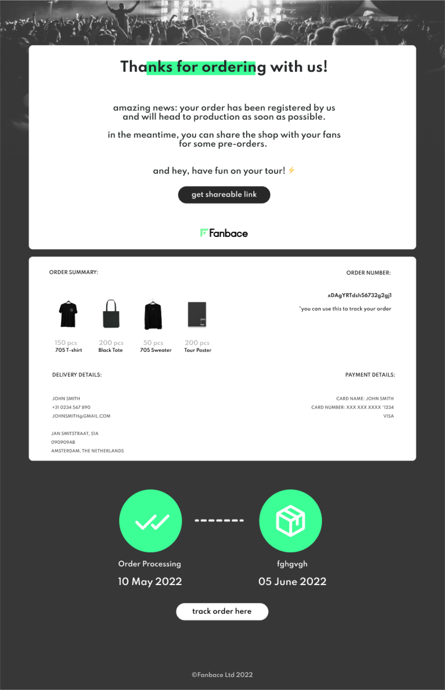